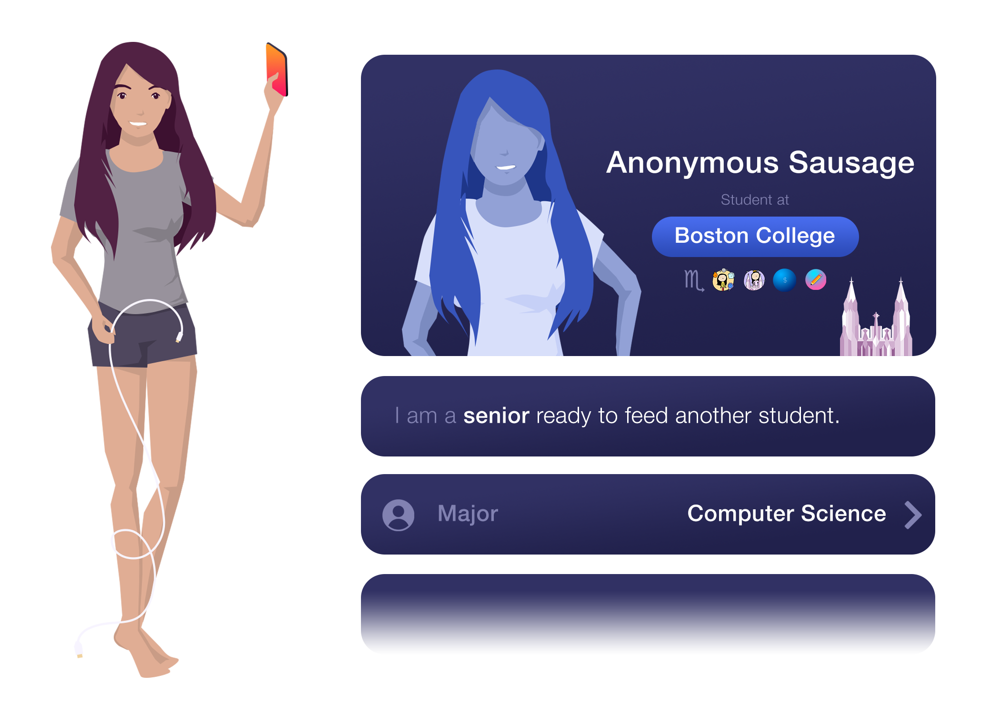

Stories



From Linda
I had trouble fitting in when I first got to BC. I felt like a minority for the way I looked, and I struggled to approach people, especially if they were a different gender, race, grade, or socioeconomic class. Why, I wondered, would a white, upperclassman guy in a Vineyard Vines button-down have any reason to talk to a freshman girl like me?
It was through the meal plan that I found an opportunity to make new friends. With a few hundred dollars left on my card, I began to take my classmates to dinner and discovered that we had so much more in common than I thought. That senior guy in the Vineyard Vines shirt? He was in my Computer Science class, but we never talked. It was only after lunch that we ended up studying together for the final and becoming good friends. From there, I decided to build an app that would pair up students with similar interests for meals. To help get past fear and bias, I decided to use anonymous chat to start the conversation.
As my first and only passion project, Mac Daddy means a lot to me and I really want to share it with the BC community.